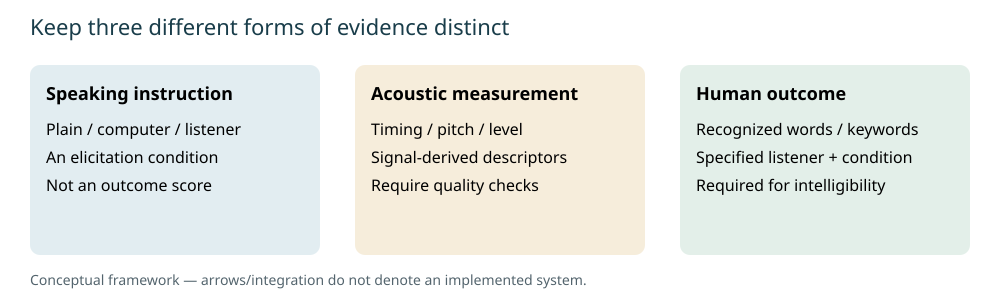
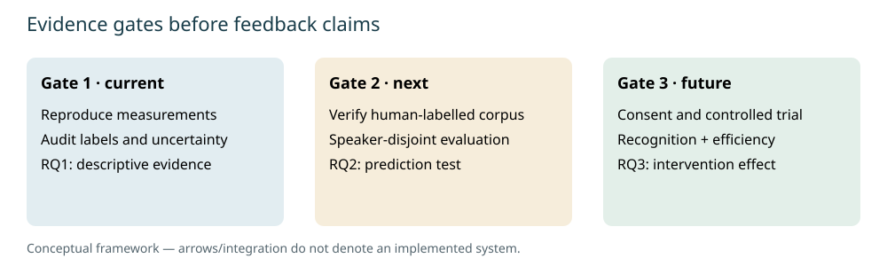

Shared project context · A1
1. Introduction and scope
Effective communication is central to coordinated action during paediatric clinical emergency simulations. This group project investigates how recorded speech can support assessment and debriefing in virtual reality training. The intended contribution is complementary evidence about spoken delivery and a useful way to present assessment findings to trainees and instructors. It is not a system for diagnosing speech disorders or inferring clinical competence from vocal characteristics.
The existing assessment approach, as described in the project materials, uses speech-to-text and AI-based analysis to examine behaviours such as closed-loop communication, roles and responsibilities, knowledge sharing, clear messages, and summarising or re-evaluating. The exact deployed models, prompts and stage boundaries have not been independently audited here. A transcript represents linguistic content but does not fully preserve pitch, amplitude or fine temporal structure. Human difficulty recognising an instruction can therefore be relevant even when its transcript is correct; this does not imply that automatic speech recognition always recovers difficult speech accurately.
Charlie develops the speech-analysis research in Part A. Kang Zhe is responsible for presenting feedback to end users in Part B. The two contributions share a debriefing context but are not presently an integrated system. Following supervisor guidance, the interim argument presents them consecutively. Success at this stage means defensible constructs, reproducible preliminary evidence, explicit limits and feasible validation, rather than a claim of completed clinical deployment.

Part A · Charlie Hee Ming Guan · A1–A2
2. Problem, construct selection and literature
The research gap is not simply the absence of another acoustic score. It is the absence of a validated relationship between measurable delivery characteristics and useful communication outcomes in the intended setting. We distinguish intelligibility, the recognition of spoken linguistic content under specified listening conditions, from comprehensibility, which includes contextual assistance, and efficiency, which concerns the rate of successfully communicated information. These distinctions guide outcome selection; ASHA provides relevant terminology, not evidence that healthy clinicians should receive dysarthria assessments. [1]
The initial construct was perceived vocal confidence: how certain and committed a speaker sounds to a listener. Jiang and Pell investigated the acoustic and perceptual expression of confidence and doubt, supporting its study as a listener impression. However, perceived confidence is not self-reported certainty, factual correctness or competence. Its dependence on listeners, task and context made a direct clinical feedback interpretation difficult to justify. [2]
This direction nevertheless produced substantial reusable engineering: an openSMILE extractor, 88 eGeMAPSv02 functionals, supporting temporal and energy descriptors, a proposed listener-rating protocol, supervised baselines, feature ablations and local live/paired demonstrations. A separate benchmark used 600 labelled children's English oral-reading recordings. Independent refitting of its saved feature table reproduced pooled balanced accuracies of 0.3333 for the majority baseline, 0.7160 for logistic regression and 0.7813 for Random Forest. These are recording-level cross-validation results; verified speaker independence was not established. Children reading passages differ from adult clinicians interacting during emergencies. The result supports a pipeline demonstration, not adult vocal-confidence or intelligibility validity. [3] [project methods]
We compared confidence, utterance fluency, closed-loop communication, interpersonal vocal characteristics, accommodation and intelligibility. Closed-loop communication already substantially overlaps the transcript-based assessment described by the project. Fluency characterises production continuity; confidence concerns impressions; accommodation concerns adaptation to a listener. Intelligibility offers the more direct operational question: did a listener correctly recognise the spoken content? The selection is a research judgement about usefulness and measurability, not evidence that the other constructs are unimportant.
Clear speech is a listener-oriented speaking style intended to improve understanding. It must remain distinct from intelligibility outcomes and from the acoustic descriptors through which it may operate. Smiljanić and Bradlow's review describes interacting talker, listener and signal factors. Krause and Braida analysed clear speech produced at normal rates, supporting the conclusion that slowing alone cannot define the clear-speech benefit. A feedback rule that simply rewards longer utterances could therefore misrepresent the literature and penalise efficient communication. [4] [5]
Instruction matters. Lam, Tjaden and Wilding recorded twelve speakers producing 18 sentences under habitual, clear, hearing-impaired-directed and overenunciation instructions; the acoustic adjustments differed in magnitude. Gutz, Maffei and Green studied 23 healthy speakers using habitual speech, clear speech and feedback from DeepSpeech. They reported clearer and more intelligible speech in the feedback and clear conditions, with overlapping changes in rate and vowel distinctiveness, but different relationships between features, ASR accuracy, intelligibility and clarity. These studies motivate separate measurements and outcomes; they do not validate our application or a universal acoustic threshold. [6] [7]
Healthcare relevance also requires realistic vocabulary and listening conditions. Bent and colleagues tested 69 young adult listeners across quiet, speech-shaped noise and hospital noise. Both noise conditions reduced recognition, while lexical frequency and familiarity were associated with accuracy. This supports attention to environment and terminology without claiming that our recordings reproduce clinical interactions. [8]

A2 · Research questions and hypotheses
3. Questions and evaluation framework
RQ1: Can literature-supported acoustic measurements reliably characterise differences in speaking behaviour? The working hypothesis is that matched speaking instructions alter specified timing and pitch descriptors. Edinburgh supports a descriptive test within one speaker. Reliability additionally requires annotation checks, measurement sensitivity analysis and manual review; successful software execution alone does not establish measurement validity.
RQ2: Can selected speech-acoustic characteristics predict human intelligibility, providing information beyond contextual or speech-recognition baselines? The planned hypothesis concerns improvement in held-out recognition prediction when validated speaker-side features are added to simpler models. Current R2SPIN evidence concerns masking-related audibility, so it is relevant methodological groundwork rather than a direct test of that hypothesis.
RQ3: Can targeted acoustic feedback improve human recognition while preserving communication efficiency? This is a downstream objective. No intervention effect, learning benefit or improvement in clinical outcomes has been established. RQ1 and RQ2 are the interim priorities; RQ3 requires a suitable dataset, trustworthy measurements and a controlled listener experiment before any effectiveness claim.
The framework separates four stages: proposed methods, implemented software, tested behaviour and validated inference. A working player is implemented and operationally tested; its usefulness as assessment remains unvalidated. A reproduced classification result establishes reproducibility under its evaluation design, not transfer to another population. This distinction also constrains the language of feedback: observations should identify the evidence and uncertainty before suggesting a change.
For predictive evaluation, preprocessing must be fitted inside training folds, with identifiers excluded and grouping matched to the intended generalisation. Recognition accuracy is interpretable but depends on a threshold and outcome prevalence. The Brier score, the mean squared difference between predicted probability and the binary outcome, evaluates probabilistic error; lower is better. Calibration and clustered uncertainty are planned additions. Repeated recordings or listener responses must not be counted as independent speakers.
A3–A4 · Prototype and methods
4. Acoustic measurement and reproducibility
The existing Python/openSMILE implementation was retained rather than replaced. Standardised eGeMAPSv02 extraction provides interpretable frequency, energy and spectral descriptors, with 88 functionals verified by tests. Additional temporal descriptors remain exploratory. The original energy gate is sensitive to amplitude and threshold choices; it is neither validated voice activity detection nor a validated pause detector. Standard feature definitions support reproducibility, while their interpretation still requires evidence for the target construct. [9]
The Edinburgh prototype serves three fixed matched sentence examples through a local browser interface. Each offers plain, computer-directed and non-native-listener-directed recordings, with original playback and side-by-side measurements. Matching speaker, microphone and sentence controls several obvious sources of variation and makes the extraction inspectable. The demonstration was necessary to expose observable signal differences and test the end-to-end audio path. It was not designed to estimate listener benefit, select the best clinical instruction or compare multiple speakers.
Whole-file duration is samples divided by sample rate and includes edge silence. Recorded RMS level is expressed in dBFS, a digital amplitude reference, rather than calibrated sound pressure or perceived loudness. Estimated F0 percentile range is the eGeMAPS smoothed nonzero F0 80th-minus-20th percentile difference in semitones, not a minimum-to-maximum range in hertz. Pitch tracking remains automated and has not been manually validated. These definitions prevent duration, loudness and pitch from silently changing meaning between code, figures and discussion.
For this consolidation, a separate reproduction script processed the complete Edinburgh corpus, parsed hand-corrected annotations and regenerated aggregate findings without overwriting the working demo. It also independently refitted the R2SPIN benchmark and historical reading-confidence models from their available inputs. Source hashes, environment versions, model definitions and aggregate tables accompany the report. Raw recordings, phonetic annotations, individual listener rows, models and identifying reading-dataset filenames remain local. Public documentation gives acquisition and reproduction instructions rather than redistributing restricted materials.
Operational tests cover the existing tools, corpus completeness, matching, file hashes and selected measurements. New checks examine timing definitions and held-out-list evaluation. These tests detect implementation errors but cannot replace listening experiments or manual pitch/formant review. The research audit records which outputs were regenerated, which were retained as historical evidence, and which claimed later analyses could not be found. [audit]
A4–A5 · Within-speaker study
5. Edinburgh study and findings
The Acted Clear Speech Corpus describes one male native British English speaker with an RP accent, reading 25 prompts under five conditions: plain, infant-directed, computer-directed, non-native-listener-directed and speech produced while hearing noise. Although two recording microphones are described, the downloaded WAV archive contains 125 mono MKH800 recordings at 16 kHz. All 25 sentence identifiers occur in every condition. Automatic phone labels and genuine hand-corrected TextGrids accompany the audio. No human listener-recognition scores were identified in the download. [10]
Annotated span extends from the first to the last nonempty, non-pure-silence interval. Pure silence spellings include uncertainty markers; composite labels such as silence-plus-stop are retained as indivisible phone-like intervals. Phone-like duration and internal silence-labelled duration are therefore annotation-derived proxies. The supplied criteria explicitly warn that a silence label can denote an unassignable spectrogram gap rather than a heard pause. Boundary uncertainty and composites make automatic articulation-rate or pause interpretations unjustified without further review.
Against plain speech, computer-directed speech had a longer annotated span in all 25 sentence pairs, with a median paired increase of 1.73 seconds. Non-native-listener-directed speech also increased in all 25 pairs, with a median increase of 0.80 seconds. Computer-directed median paired changes included 1.33 seconds in phone-like intervals and 0.51 seconds in internal silence-labelled intervals. These medians need not add to the median total change. Timing differences therefore involve both categories under the stated parsing rules, without establishing perceptual pausing or an intelligibility mechanism.
Pitch patterns differed by instruction. Computer-directed estimated F0 percentile range decreased in all 25 pairs, with a median change of −2.60 semitones; infant-directed range increased in 24 pairs, with a median change of +3.16 semitones. The opposite directions caution against describing every acted condition as the same acoustic style. They also show why selecting only intuitive examples or assuming that wider pitch range always means clearer speech would be inappropriate.

These are within-speaker production findings, not evidence of improved recognition. Acting as if addressing a computer is not equivalent to receiving ASR feedback. Producing speech while hearing noise is not equivalent to a listener recognising speech in noise. The separate exploratory vowel/formant analysis package described in prior discussions was unavailable locally. Whole-file F1/F2 functionals alone cannot establish vowel-space expansion, so no vowel-space result is presented. Automatic formant tracking, vowel identity and phone alignment require further validation.
A4–A5 · Human-labelled exploratory benchmark
6. R2SPIN and dataset selection
To move beyond speaking-style labels, we examined datasets containing human recognition outcomes. The public BBC R2SPIN release provides binary sentence-final keyword responses and published glimpse proportions. Its recordings use two new RP speakers; the table analysed here contains 6,400 responses from 16 listeners across eight lists. The original listening results depend on the specified speech/noise timing and original babble arrangement. They are not whole-sentence recognition scores or measurements from our Edinburgh audio. [11]
We independently reacquired the table from a pinned repository revision and used eight leave-one-list-out folds. A simple logistic model predicted keyword correctness from sentence predictability; a second added published keyword glimpse proportion. Standardisation and fitting occurred within each training fold, without tuning. Participant identifiers, demographics, response order, retake flag and outcomes were excluded from predictors. Additional speaker-indicator comparisons assess sensitivity to the two recorded voices rather than generalisation to new speakers.
The context-only model achieved 69.14% accuracy and a Brier score of 0.2060. Adding keyword glimpse proportion achieved 72.88% accuracy and 0.1805 Brier score. These reproduce the previously reported rounded results. Adding the speaker indicator to both context and glimpse proportion yielded 73.34% and 0.1785 respectively. Improvement over the context baseline suggests useful audibility information under this dataset's conditions; it does not establish that our delivery descriptors predict intelligibility.

Keyword glimpse proportion measures acoustic audibility under masking, not speaking rate, articulation or a general clear-speech characteristic. List-held-out evaluation shares speakers and listeners across folds; keywords can also recur across contextual sentences. Thus 6,400 responses do not supply 6,400 independent talkers, and list separation does not eliminate every dependency. Our refit is an exploratory prediction analysis, distinct from the original authors' inferential analysis. It cannot establish causal effects or clinical validity.
Existing human-labelled data remain preferable to immediate recruitment if their labels and audio align with the target question. SLUSI is a promising next audit because its official description includes multiple speakers, transcription-based intelligibility scores and separate ratings. Exact scored-excerpt alignment, identities and use conditions must be checked before modelling. Clarity provides hearing-aid-processed speech, listener characteristics and measured recognition, with explicit generalisation tracks; its listener/device focus creates a different domain shift. Neither candidate has been downloaded or benchmarked in this task. [12] [13]
A5–A6 · Interpretation and project plan
7. Limitations and next evidence gates
The present evidence is strongest for reproducible implementation and descriptive production differences. Its central limitations are a single Edinburgh speaker, uncertain segmentation, unreviewed pitch tracks, absent listener labels for those styles and limited speaker diversity in R2SPIN. Historical reading-confidence performance is additionally vulnerable to speaker, text and recording overlap. None of these studies establishes adult clinical generalisation, competence assessment, feedback usefulness or improved emergency teamwork.
The immediate measurement gate is a documented manual audit of representative annotations and pitch tracks, including ambiguous boundaries and composite silence labels. Boundary sensitivity should be quantified before timing proxies become articulation or pause features. A small prespecified feature set is preferable to adding many unvalidated descriptors. Vowel-space analysis should proceed only after reliable vowel-category segmentation and formant checks; a visually appealing plot is insufficient justification.
The next data gate is a verified join between audio, transcript and genuine human recognition outcomes in a multi-speaker dataset. We will compare source relevance, licensing, listener population, available speaker identities, sentence coverage and recording conditions. Predictive testing should include simple contextual and frozen ASR baselines, speaker-disjoint splits, fold-local preprocessing and an untouched final evaluation. Where listeners or items recur, analysis must acknowledge clustering and avoid naive row-based uncertainty.
If secondary data cannot answer the speaker-side question, a supervisor-approved feasibility study will specify the listener population, vocabulary, noise/SNR, equipment and scoring rules before recruitment. Counterbalancing should prevent a listener hearing multiple versions of the same sentence. Transcription accuracy and subjective clarity will remain separate outcomes. Pilot data should inform sample-size and power decisions; institutional ethics guidance, consent for voice reuse and protected storage are prerequisites. Communication efficiency should be evaluated through correctly recognised words per unit time, not rewarded solely through slower delivery.
For the interim, the evidence audit and rubric map link each claim to its status and source. The user-supplied assessment brief specifies a 40% interim component, a maximum 30-minute group presentation in Semester 1 Week 12, and a Pages report due at the end of Week 13 with no more than 4,000 main words. Exact calendar deadlines require course confirmation. The complete group report should target 3,600–3,800 words after Part B is authored; the current draft deliberately reserves space rather than inventing that contribution.

Part B · Ang Kang Zhe · Author contribution pending
8. Feedback presentation
Draft status. Kang Zhe is responsible for communicating assessment results, feedback visualisation, user-facing debriefing interfaces and evaluation of usefulness and usability. No attributable research, prototype or test results were located in the inspected repository and accessible project materials. This section records the intended responsibility and required contributions; it does not represent completed design or integration.
B1. User need and design rationale
To complete: identify the intended trainees and instructors, the debriefing decisions they need to make, and evidence from relevant literature or user inquiry. Compare presentation alternatives and justify selected requirements. Explain how users will distinguish measured observations, model estimates and unsupported interpretations.
B2. Prototype and evaluation
To complete: provide attributable interface sketches or a runnable prototype, explain design choices, and document representative feedback examples. Define a test procedure for comprehension, usability and usefulness, then report actual observations and limitations. Use synthetic examples or approved data until permission for participant material is confirmed.
B3. Contribution and next steps
To complete: identify Kang Zhe's authored artifacts, completed work, unresolved issues and feasible milestones. A future interface contract may specify evidence fields, units, provenance and uncertainty, but integration with Part A is not required at interim. Accepting the GitHub write invitation enables contribution; it does not establish completion of this section.
9. Shared outlook
The project now has a reproducible basis for distinguishing acoustic delivery evidence from listener outcomes and for explaining what remains uncertain. Charlie's work establishes preliminary within-speaker measurements and a separate human-recognition benchmark, while preserving earlier confidence research as historical evidence. Kang Zhe's feedback contribution must be authored and evaluated independently. The next substantive advance is trustworthy human-outcome validation and defensible feedback design, followed by integration only when evidence and scope justify it.